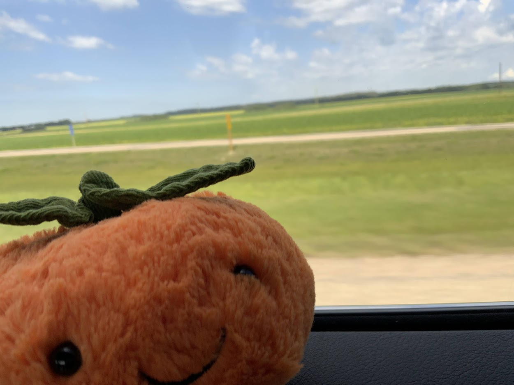
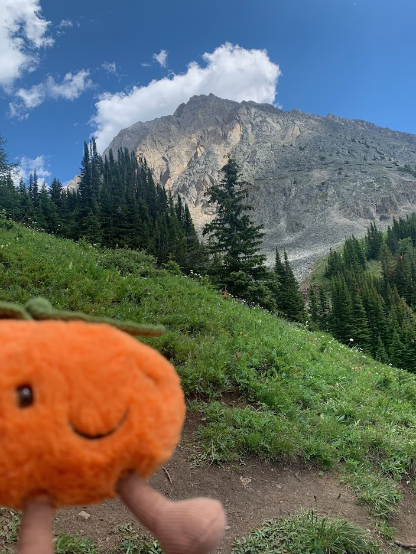
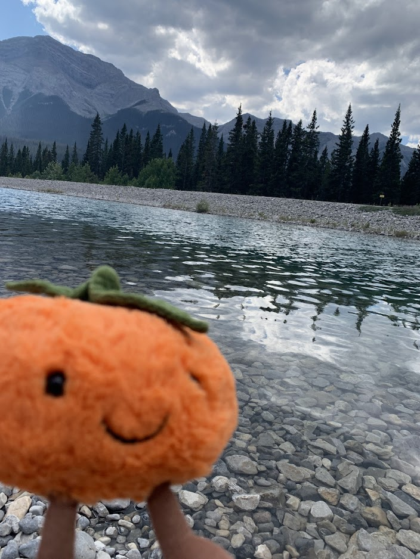
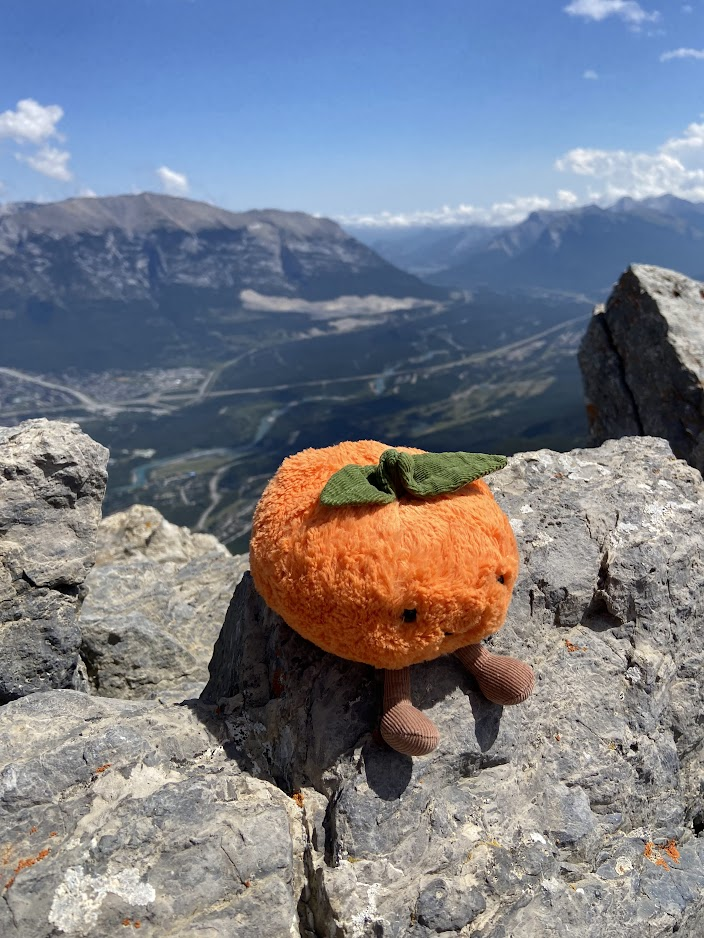
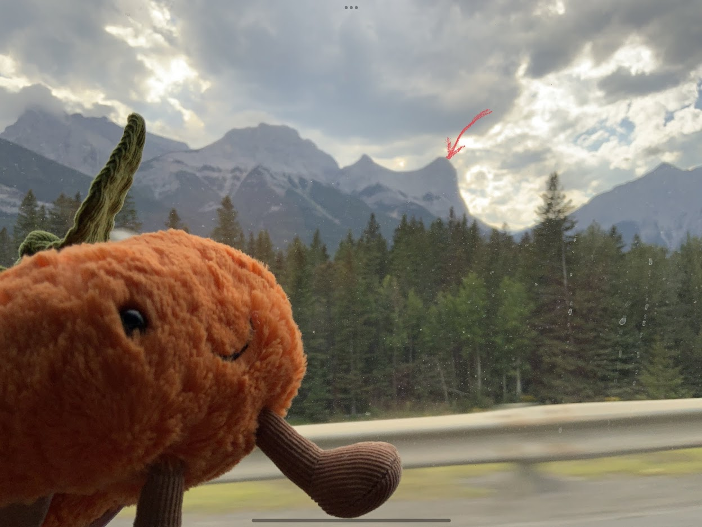
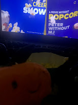
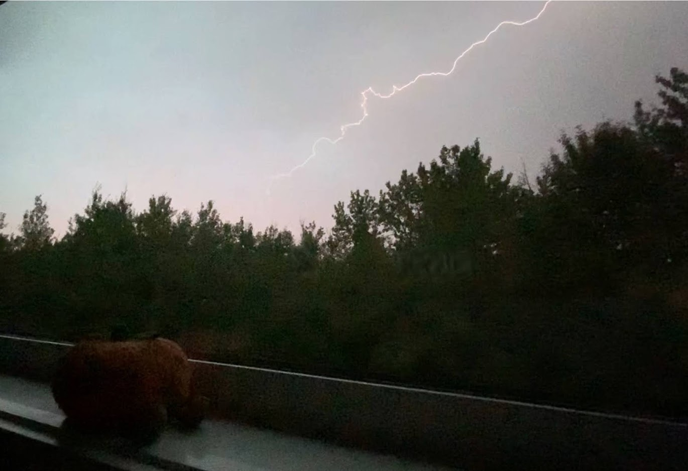

Mini Travel Blog
featuring an orange...
It all started on one sunny July morning when we left Edmonton to explore Kananskis. The drive was long but totally worth it.
When we arrived we decided to go on a short hike in the mountains in a place called Ptarmigan Cirque. It was a short but rewarding hike of 3km. There were many sights along the way, from wildflowers to small waterfalls
We also passed by a very pleasant stream.
After that we drove back to our hotel to get a good night's rest before the huge hike. The next day we woke up early and got a small breakfast. Then we set off towards Ha Ling Peak where we would be hiking. The hike was very thrilling and it was fun to be so high up!
Here, you can see me at the very top of the mountain. Reaching the top was a bit harder than the rest of the hike because of loose rocks and gravel. It can be dangerous to fall over their too because you are so high up. But we managed and reached the top!
and this is where we hiked to from ground level. It looks so crazy now that I look at it!
The pictures below are seperate from the trip but I still feel like they should be added...
I went to watch a movie
Me watching a thunderstorm.